Page 1 / 原始页码 175
第 10 章 光合作用
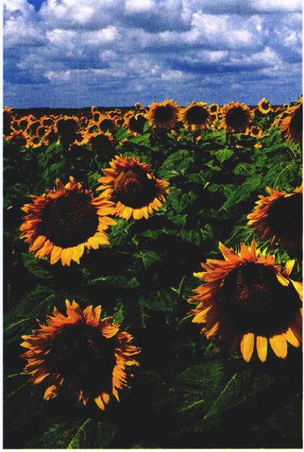
图 10.1 捕获能量 这些盛开在八月艳阳下的向日葵正在捕获光能，并通过光合作用将光能转化为化学能。
没有光合作用，地球上的生命就不可能存在。我们所呼吸的空气中的每个氧气分子，都曾是水分子的一部分，由光合作用释放出来。煤、木柴、汽油和天然气的燃烧，我们所吃的全部食物在体内的氧化，这些过程释放的能量，都直接或间接地由光合作用从阳光中捕获。这一点，对于帮助我们理解光合作用尤为重要。通过研究，使我们有能力提高作物的产量和土地的利用率，在日渐拥挤的当今世界，这些都是科研工作的重要目标。前一章中，我们描述了细胞如何从食物分子中获取化学能，并利用这些能量为它们的活动提供动力。在这一章中，我们将研究光合作用，在这个过程中，生物体从阳光里获取能量，并用这些能量来构建富含化学能的食物分子（图 10.1）。
Page 2 / 原始页码 176
10.1 什么是光合作用
10.1.1 叶绿体是光合作用的机器
生命的动力由阳光提供。从根本上说，大部分活细胞使用的能量来自太阳，这些能量是由植物、藻类和细菌通过光合作用的过程捕获的。正因为我们的星球沐浴在从太阳到地球的能流中，生命的多样性才有了存在的可能。每天到达地球的辐射能，与约100万个广岛原子弹所含能量相当。在这丰富的能源供应中，光合作用捕获了其中约 1%，提供了推动所有生命活动的能量。
1) 光合作用过程概述
光合作用在多种细菌、藻类和绿色植物的叶子里（有时也在茎中）进行。图 10.2 描述了植物叶子的组织结构。从第 5 章中我们知道，植物叶子的细胞中含有名为“叶绿体”的细胞器，光合作用的过程就在它里面进行，在植物中没有其他的结构能执行相同的功能。光合作用分为3个阶段进行：①从阳光中捕获能量；②用这些能量来制造 ATP 和具有还原能力的化合物 NADPH；③以 ATP 和 NADPH 来推动来自空气中的二氧化碳合成为有机分子（碳的固定）。
前两个阶段在光存在的条件下发生，一般称为光反应。
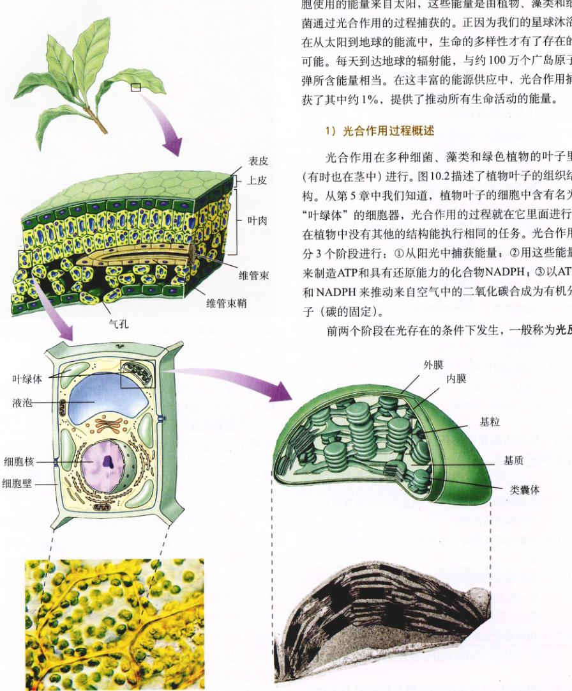
图 10.2 进入叶片之旅 植物的叶片中具有多层富含叶绿体的细胞（叶肉细胞）。叶绿体中扁平的类囊体堆积成柱状，称为基粒。
Page 3 / 原始页码 177
应 (light reaction)。而第三个阶段，即用大气中的 CO₂ 合成有机分子的过程，称为卡尔文循环 (Calvin cycle)。只要能获得 ATP 和 NADPH，卡尔文循环可在无光的情况下进行。
下面这个简单的方程式概括了光合作用的全过程：
6CO₂ + 12H₂O + 光 → C₆H₁₂O₆ + 6H₂O + 6O₂
2) 叶绿体的内部结构
叶绿体的内膜形成名为类囊体 (thylakoid) 的囊状结构，许多类囊体通常互相堆叠成垛，称为基粒 (grana)。类囊体膜中存储着可捕获光能的光合色素和合成 ATP 的系统，类囊体的膜系统周围是半液态的物质，称为基质 (stroma)，基质中有着装配含碳分子所需的酶。在类囊体膜内，光合色素聚集在一起，组成了光系统 (photosystem)。
光系统内的每个色素分子都能够捕获光子——一种能量小包裹。蛋白质与色素分子紧密结合。当适当波长的光照射到光系统中的色素分子时，随之产生的兴奋在不同叶绿素分子间传递。被激发的电子并没有发生物质上的传递——只是其中的能量发生了分子间传递。这种能量传递，颇为类似台球游戏开杆时的情形；若笔直将母球打到其余 15 个球所组成三角形的一个角上，则三角形另外两个角上的球会飞出而中间的球却不会移动。能量在中间的球之间传递，直至其达到最远的两个球为止。最终能量到达了一个关键的叶绿素分子——此分子与一个膜蛋白相接触。能量以受激电子的形式传递到该蛋白，而该蛋白则将它传递到一系列其他膜蛋白上，能量用来制造 ATP、NADPH 和有机分子。就这样，光系统像天线一样运作，将许多单个色素分子获得的光能收集起来。
10.2 光合作用研究：实验的历程
10.2.1 土壤和水的作用
研究光合作用的历程，是科学史上最有趣的故事之一，同时也是一对一复杂过程的绝妙诠释。故事开始于 300 年前，一位比利时医生——让·巴蒂斯达·范·海蒙特 (Jan Baptista van Helmont) (1577—1644)，进行了一个简单却经过精心设计的实验。自希腊时期起，人们普遍认为植物是从土壤中获取养分的，顾名思义，就是用根将养分吸上来。范·海蒙特想到了检验这一想法的一种简单方式，他在一个大盆里栽种了一棵小柳树，并事先称量了柳树和土壤的重量。柳树在盆中生长了好几年，在此期间，范·海蒙特仅仅给它浇水，到第 5 年末，柳树长大了许多：它的重量增加了 74.4 kg，然而所增加的质量不可能完全来自土壤，因为盆中土壤的质量只比 5 年前减少了 57 g！通过这一试验，范·海蒙特证明了组成植物的物质并非只来自土壤。但他做出了错误的推断，认为植物所增加的质量大部分来自他所浇的水。
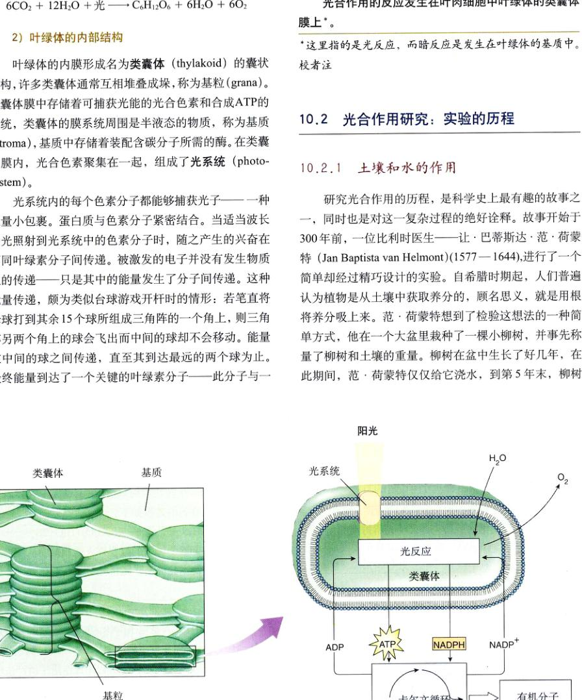
图 10.2 (续) 光反应发生在类囊体的膜上，生成为卡尔文循环提供能量的 ATP 和 NADPH。叶绿体内膜内部的液态基质中含有催化卡尔文循环的酶。
Page 4 / 原始页码 178
一百年后，事情才有所转机。关键的线索来自英国科学家 Joseph Priestly 对空气特性的开创性研究。1771 年 8 月 17 日，Priestly “意外地发现了一种方法，可使被蜡烛燃烧所损耗的空气复原”。他“将一根（活的）薄荷枝条放进蜡烛燃尽的空气中后，发现另一支蜡烛在同月的 27 日又能在这些空气里燃烧起来了”。不知何故，植物看来可令空气复原！Priestly 还发现，尽管老鼠不能在被蜡烛消耗的空气中呼吸，但在被植物还原过的空气中，老鼠却没感觉到任何不适。关键的线索在于，活的植物“往空气里加了什么”。
植物是如何“复原”空气的呢？25 年后，荷兰物理学家 Jan Ingenhousz 解开了这个谜。经过几年的努力，Ingenhousz 不但重复了 Priestly 的工作成果，还取得了重大进展：他证明了只有在阳光存在的条件下，空气才得以复原，而且植物复原空气的部位仅限于绿叶，而不根部。他提出，植物的绿色部分进行了一种过程（我们今天称之为光合作用），这一过程利用阳光使二氧化碳 (CO₂) 分解为碳和氧。他认为，氧以氧气分子的形式释放到空气中，而碳原子则和水结合成碳水化合物（即糖类），虽然这后一步在后来得到了修正，但他绝妙的推测不失为一种很好的推测。后来化学家们发现，糖类中碳、氢和氧的原子，确实构成大约是一分子碳比一分子水（正与碳水化合物这一名称所示的一样）的比例。一位瑞士植物学家于 1804 年还发现，水是必须的反应物。到那个世纪末，光合作用的总反应式已经可以写成：
CO₂ + H₂O + 光能 → (CH₂O) + 6O₂
然而，事情并非到此为止。在 20 世纪，研究人员开始对此过程进行更细致的研究，证明光所扮演的角色远比想象中的更加复杂。
10.2.2 光反应的发现
Ingenhousz 关于光合作用的早期方程式，包含了一个我们未曾讨论的因素：光能。光在光合作用中扮演了什么角色？在 20 世纪之初，英国植物生理学家 Blackman 开始致力于这一问题的研究。1905 年他得到了初步结论：光合作用实际上是两个阶段的过程，当中只有一个阶段直接利用光。
Blackman 测量了不同的光强、CO₂ 浓度和温度在光合作用中所产生的不同效应。他发现，在光强相对较低的情况下，只要增加光照量，就能加速光合作用；而仅仅提高温度或者 CO₂ 的浓度，则不能达到这种效果（图 10.3）。然而，在强光下，温度或 CO₂ 浓度的提高，都能使光合作用大幅度加速。Blackman 推断，光合作用由两部分构成：初始部分称“光”反应，很大程度上与温度无关；而第二部分“暗”反应则与光无关，受 CO₂ 的限制。请不要被 Blackman 的称谓所迷惑——所谓的“暗”反应，也是在光照下发生（实际上，它们需要光反应的产物），它们的名称只是说明光并不直接参与这些反应。
Blackman 还发现，通过提高温度可以增加“暗”反应中碳还原的速率，但其作用范围仅限于 35°C 以下，更高的温度反而会导致该速率急剧下降。因为 35°C 是许多植物酶开始失活的温度界限（即高温破坏了导致维持酶特定的催化能力构象的氢键被打断），Blackman 由此而推断酶必然参与了暗反应。
10.2.3 光的作用
光在所谓“光”反应和“暗”反应中所扮演的角色，在 20 世纪 30 年代被 van Niel 发现。van Niel 当时是斯坦福大学的研究生，研究细菌的光合作用。他所研究的细菌中有一类紫硫细菌，在光合作用中并不释放氧气，而是将硫化氢 (H₂S) 转化为纯单质硫的小颗粒，在体内积聚起来。他观察到的过程如下：
CO₂ + 2H₂S + 光能 → (CH₂O) + H₂O + 2S
此方程与 Ingenhousz 的方程惊人地相似，从而启发了范·尼尔，他据此提出，光合作用的一般过程实际上应当是：
CO₂ + 2H₂A + 光能 → (CH₂O) + H₂O + 2A
在此方程中，H₂A 是电子供体。在绿色植物的光合作用中，H₂A 是水；而在紫硫细菌中，H₂A 是硫化氢。产物 A 来自 H₂A 的分解，所以绿色植物光合作用中所产生的 O₂，应当来源于水的分解，而不是二氧化碳。
到了 20 世纪 50 年代初期，核素在生物学中得到普遍应用，使得对 van Niel 的革命性想法进行验证成为可能。研究人员向绿色植物供应 ¹⁸O 的水，发现 ¹⁸O 最后出...
Page 5 / 原始页码 179
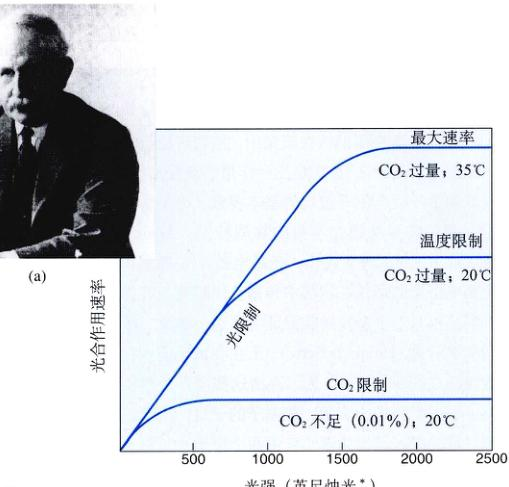
图 10.3 暗反应的发现 (a) 布莱克曼测量了不同光强、CO₂ 浓度和温度下的光合作用速率。(b) 如图所示，光在低光强下是限制因子，而在更高光强范围中温度和 CO₂ 浓度是限制因子。
现于氧气中，而不是在碳水化合物里。这正与 van Niel 的预言相符：
CO₂ + 2H₂¹⁸O + 光能 → (CH₂O) + H₂O + ¹⁸O₂
在藻类和绿色植物中，光合作用产生的典型碳水化合物是有 6 个碳原子的葡萄糖。这些生物中，完整的光合作用平衡方程式因而成为：
6CO₂ + 12H₂O + 光能 → C₆H₁₂O₆ + 6H₂O + 6O₂
现在我们知道，光合作用的第一阶段，即光反应，利用光能将 NADP（一种电子载体分子）还原为 NADPH，并制造 ATP。来自第一阶段的 NADPH 和 ATP 在第二阶段，即卡尔文循环，用于还原二氧化碳中的碳，形成简单的糖，这种糖的碳架可用于合成其他有机分子。
10.2.4 还原力的作用
van Niel 在其关于光反应的先驱性工作中进一步提出，水分解所产生的还原力 (H⁺)，在一个他称为碳固定 (carbon fixation) 的过程中，被用于将 CO₂ 转化为有机物。他的想法正确吗？
20 世纪 50 年代，Robin Hill 证实了 van Niel 的想法的确是对的，光能确实可被利用于产生还原力。从叶肉细胞中分离出的叶绿体能对光作出反应，还原染料并释放氧气。后来的实验证明，水分子释放的电子被传送给 NADP⁺。Arnon 和他的同事们还证明，在无 CO₂ 的条件下，叶绿体可以积累 ATP。若随后导入 CO₂，则 ATP 和 NADPH 均不能积累，CO₂ 合成为有机分子。这些实验的重要性，表现在以下 3 个方面：首先，它们充分证明了光合作用只能在叶绿体中发生；其次，它们揭示依赖光的反应，可以利用光能来还原 NADP⁺ 和制造 ATP；第三，它们确认了来自光合作用前一阶段的 ATP 和 NADPH，在后续的光非依赖性反应中，被用于还原二氧化碳，形成简单的糖类。
Page 6 / 原始页码 180
10.3 色素从阳光中捕获能量
10.3.1 光的生物物理特性
光的能量在哪里？在阳光中，植物可用于还原二氧化碳的物质是光合作用的奥秘所在，也是将其区别于呼吸作用等过程的基本要素。为了解决这些问题，我们需要考虑光本身的物理特性。James Clerk Maxwell 建立的理论提出，光是电磁波，也就是说，光以振荡电磁场的形式在空气中传播。1887 年，在德国的一个实验室，一个奇妙的实验证实了这一结论。年轻的物理学家赫兹 (Heinrich Hertz)，正在尝试验证一种预言电磁波存在的数学理论。为了弄清这些波是否存在，Hertz 设计了一个巧妙的实验，在屋子的一边，他建造了一个大功率的火花发生器，由位于两个细长棒上的彼此靠近的大金属球组成。当一个球上积聚了大量的静电荷，就会有电火花打到另一个球上。
建好这一装置后，赫兹开始研究电火花是否正像数学理论预计的那样，会产生看不见的电磁波（即所谓的无线电波）。在屋子的另一边，他放置了世界上第一台“收音机”——绝缘架上的一个细金属环，这个环并不是一个完整的圆周，在它的底部有一个小缺口。当赫兹在房间的另一头启动火花发生器，他观察到了环上的缺口之间，存在着微小火花的传递！这是世上第一次证实无线电波存在的例证。同时，赫兹提及另一奇怪的现象：在紫外光的照射下，环上的缺口之间更易产生火花。这个未曾预料的促进作用（称为光电效应），曾使研究人员迷惑多年。
光电效应最终由 Max Planck 在 1901 年提出的概念加以解释。在发现光与其他辐射以“光子”为能量单位进行传播的基础上，普朗克得出了一个可预言黑体辐射曲线的方程。1905 年，阿尔伯特·爱因斯坦 (Albert Einstein) 运用光子的概念，解释了光电效应。在紫外线中存在着足够能量的光子，所以当它们照射在环上时，电子会从金属表面激发出来。光子将它们的能量传递给电子，将它们从环的末端轰出，推动了无线电波诱导的电火花的传播。可见光不能轰出电子，因为它们不具备足够的能量，不能将电子从环末端的金属表面释放出来。
1) 光子中的能量
并不是所有的光子都有一祥多的能量（图 10.4）。光子的能量与光的波长成反比，相比于长波长的光，短波长的光具有更高的能量。高能量的 X 线，波长就非常短——远远短于可见光，这使它成为高分辨率显微镜的理想光源。
赫兹提到过，光电效应的强度取决于光的波长。用于产生光电效应时，短波远比长波有效。爱因斯坦为光电效应理论提供了很好的解释：阳光中包含着许多不同能级的光子，我们的眼只能感知被称为可见光的一部分，电磁波光谱的短波端有最高能量的光子，称为 γ 射线，其波长短于 1nm；而最低能量的光子是无线电波，其波长可达几千米。在光谱的可见光部分，紫光波长最短，光子能量最高；而红光波长最长，光子能量最低。
2) 紫外线
在到达地球表面的阳光中含有相当多的紫外线，因波长短，紫外线拥有比可见光更高的能量。人们普遍认为，在原始地球生命开始时期，紫外线是一种重要的能源。在今天的大气中含有臭氧（来自氧气），吸收了阳光中的大部分紫外光子，但仍有相当一部分紫外光穿透了大气，紫外光可能破坏 DNA 的化学键，使其发生导致皮肤癌的突变。正如我们将在后面章节中所述的那样，人类活动引起的大气臭氧减少，可能导致全球皮肤癌发病率递升。
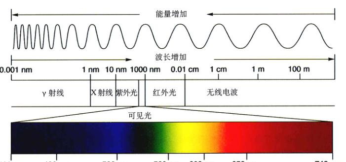
图 10.4 电磁波频谱 光是一种具有波形式的电磁能。光的波长越短，能量越大。可见光只代表电磁频谱在 400 ~ 740 nm 间的那一小部分。
Page 7 / 原始页码 181

图 10.5 叶绿素和类胡萝卜素的吸收光谱 这些峰代表两种常见形式的光合色素——叶绿素 a、叶绿素 b 和类胡萝卜素所吸收的太阳光波长。叶绿素主要吸收蓝紫光和红光，反射绿光。类胡萝卜素主要吸收蓝光和绿光，反射橙光和黄光。
3) 吸收光谱与色素
分子是如何“捕获”光能的呢？我们可以将光子看作快速运动的能量包，当其撞击分子时，其能量可能以热能形式衰失，或被分子中的电子吸收，将那些电子推进到高能级。光子能否被吸收，将取决于它所载能量（由波长决定）的多寡以及所撞击分子的化学性质几何。如第 2 章所述，电子在围绕原子核轨道中占据着不连续的能级，将电子推进到上一能级，需要恰好量的能量，正如到达梯子的另一横档，你需要你的脚升到一个恰当的高度。所以，特定的原子只能吸收特定光（对应于原子所能提供的电子能级）的光子。结果是，每个分子都有其特有的吸收光谱 (absorption spectrum)，即它所能吸收光子的范围和效率。
善于吸收可见光的分子称为色素 (pigment)。生物体演化出许多不同的色素，但是参与绿色植物光合作用的色素只有两大类：类胡萝卜素 (carotenoid) 和叶绿素 (chlorophyll)。叶绿素所能吸收的光子能量范围窄。植物体内有两种叶绿素——叶绿素 a 和叶绿素 b，它们偏向吸收蓝紫光和红光（见图 10.5），这两种色素都不吸收波长在 500 ~ 600 nm 间的光子，所以这些波长的光会被植物反射出来。这些光子随后被我们眼中的色素所吸收，我们便感到植物是绿色的。
叶绿素 a 是主要的光合色素，也是惟一的可直接将光能转化为化学能的色素；而叶绿素 b 则作为辅助或第二吸光色素，补足并增加叶绿素 a 对光的吸收。叶绿素 b 的吸收光谱向绿光波长部分移动，因而叶绿素 b 能吸收一些叶绿素 a 不能吸收的光子。所以，叶绿素 b 大大提高了植物对阳光的吸收比例。另一类重要的辅助色素是类胡萝卜素，它可以吸收两种叶绿素都不能有效吸收的光波光能，辅助进行光合作用。
10.3.2 叶绿素和类胡萝卜素
叶绿素吸收光子，依靠的是与光电效应相似的激活过程，这些色素包含有一种复杂的环结构，称为卟啉环，该环的中心是一个镁原子。色素分子吸收的光子激活活环上的电子，电子随后穿过交替的碳键系统被运出，附在环外侧的一些小侧链基团，能改变分子在不同叶绿素中的吸收特性（图 10.6）。精确的
Page 8 / 原始页码 182
吸收光谱，同时受叶绿素与特定蛋白结合所创造的局部微观环境的影响。
Ingenhousz 刚证明了只有植物的绿色部分能“复原”空气，研究人员就推测叶绿素是光合作用中植物用于吸收光的主要色素。19 世纪所做的实验明确地证实了这一猜想。Englemann 在 1882 年所做的一个实验（图 10.7）就是个绝好的例子——设计简单而结论清晰。Englemann 着手鉴定光合作用的作用光谱 (action spectrum)，即不同波长的光在促进光合作用中的相对效率。他利用放在显微镜下的一张玻片，完成了整个实验。为了得到不同波长的光，他在显微镜下放置了一个棱镜，将照射到玻片上的光分解为色谱，然后，他穿过光谱放了一根绿藻细胞的纤丝，因而不同波长的光照到纤丝的不同部位，使绿藻能进行光合作用。为估算光合作用进行的快慢，Englemann 选择了监控氧气产生速率的方法。在缺乏质谱仪及其他现代化设备的情况下，他向玻片加入一种好氧（会趋向有氧的地方）细菌，他知道，它们会在纤丝旁有氧气产生的位置聚集起来。他发现细菌聚集在红、紫光照射的地方，证明叶绿素吸收最强烈的两种光便是红光与紫光。
所有的植物、藻类和蓝细菌，都将叶绿素 a 作为主要色素。我们不禁要问，为什么这些进行光合（自养）生物不使用像视黄醛（我们眼中的色素）这样的色素？视黄醛的吸收光谱能覆盖整个 500 ~ 600nm 的范围。最可能的原因是与光合作用效率有关，虽然视黄醛能吸收大范围波长的光，但其吸收效率相对较低。与之相对的，叶绿素只吸收两个窄波段的光，吸收效率却极高。因此，植物和大部分其他光合生物，利用叶绿素所能达到的总光子吸收速率，相对于其他色素要高得多。
类胡萝卜素 (carotenoid) 由碳环组成，这些碳环连接到含交替双键的碳链上，它们能吸收很大能量范围内的光子，尽管对这些能量的转运并不总是那么有效。类胡萝卜素在光合作用中，帮助吸收叶绿素所不能有效吸收的波长范围内的光（图 10.5，图 10.8）。
典型的类胡萝卜素是 β-胡萝卜素，它的 2 个碳环，由含有交替单双键的 18 个碳原子组成的碳链连接起来。将一个 β-胡萝卜素分子平分，就能得到两分子的维生素 A。维生素 A 经氧化后，产生视黄醛——脊椎动物视觉上利用的色素，这就是富含 β-胡萝卜素的胡萝卜能增强视力的原因。
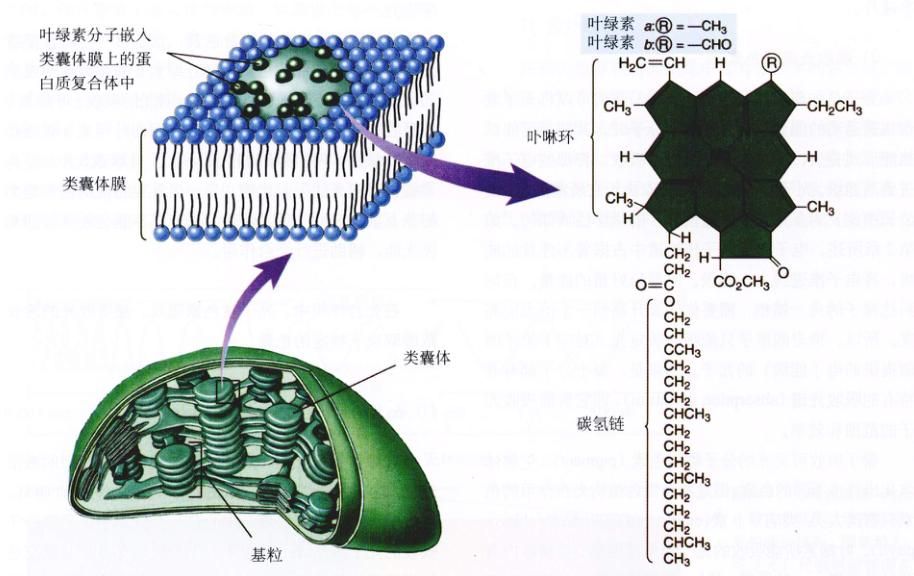
图 10.6 叶绿素 叶绿素分子以一个卟啉环为头，一条碳链为尾。碳链则将整个色素分子嵌入蛋白的疏水区域，而蛋白质深埋于类囊体膜上。两种叶绿素分子的惟一区别在于叶绿素 b 上以一个 —CHO (醛基) 代替了叶绿素 a 中的 —CH₃ (甲基)。
Page 9 / 原始页码 183
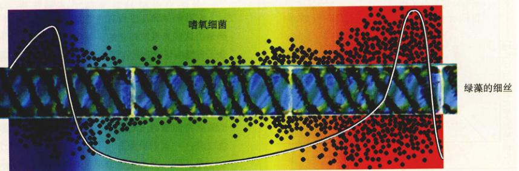
图 10.7 建立光合作用的作用光谱 可以看出，Englemann 在其实验中反映出来的光合作用的作用光谱与叶绿素的吸收光谱相吻合 (参见图 10.5)。
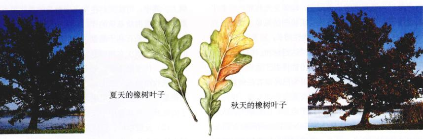
图 10.8 类胡萝卜素和其他辅助色素带来了秋天的颜色 春夏两季，叶子中的叶绿素掩盖了类胡萝卜素和其他辅助色素的存在。而当凉爽的秋日气温使叶内停止制造叶绿素时，就不再存在能反射绿光的叶绿素，于是叶子便反射类胡萝卜素和其他辅助色素所不能吸收的橙光和黄光。
10.3.3 色素组成光系统
光合作用的光反应在膜上进行。在范尼尔所研究的那类细菌中，细胞膜本身就是光合膜。与之相对，在植物和藻类里，光合作用在名为叶绿体的细胞器（它是光合细菌演化来的后裔）中进行——光合膜就在叶绿体内。光反应分四步进行：
(1) 初始光事件：光子被色素捕获，初始光事件的结果是色素内的一个电子被激发；
(2) 电荷分离：激发能量被传递到称为反应中心的一个特定叶绿素中，反应中心将一个受激电子传给一受体分子，从而开始了电子传递；
(3) 电子传递：受激电子在嵌入光合膜的一系列电子载体分子中穿梭，其中一些分子会同时对质子进行跨膜运输，从而产生质子浓度梯度。电子到达该“泵”分子，诱导质子跨膜运输的发生，随后电子被传递到下一个接收分子中；
(4) 化学渗透：与有氧呼吸的情况相似，积聚在膜一侧的质子，通过特定的蛋白质复合体穿膜回流，ATP 的化学渗透合成就在该复合体中进行。
Page 10 / 原始页码 184
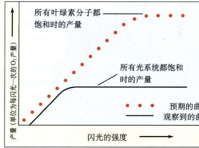
图 10.9 爱默森和阿诺德的实验 当光合作用达到饱和时，光强的进一步增加已不能带来产量的提高。
1) 光系统的发现
研究色素如何吸收光的方法之一，是测量光合作用的产量对光照强度的依赖程度，即多少光照能产生多少光合作用。在植物中进行这类实验的结果是：在低光强下，光合作用产量随光强呈线性增长；随着光强增加，产量增长变慢，最终在高光强时达到饱和。饱和发生的原因是植物中所有的吸光能力都得到了运用。光照继续增强，也不能再增加产量，因为已经没有任何东西可以再吸收增加的光量了。
饱和时所有的色素都得到了运用，这是颇为诱人的想法。1932 年，植物生理学家 Robert Emerson 和 William Arnold 开始检验这一假说。他们在实验中使用绿藻，在实验中，他们测量了 Chlorella（一种单细胞绿藻）暴露在极短的闪光（只持续几微秒）下的光合作用氧气产量。假定色素饱和假说正确，他们预计当增加闪光的强度时，每次闪光的产氧量都会增加，直到每个叶绿素分子都吸收了一个光子，随后又在光反应中将它们用于产生一分子氧。
出乎意料之外，实际发生的情况并非如此。饱和现象出现得很早。此时每 2500 个叶绿素分子才产生一个氧气分子（图 10.9）这使 Emerson 和 Arnold 推断，光不是被单个色素分子所吸收，而是被叶绿素群和辅助色素分子（统称为光系统）所吸收的。光被光系统里几百个色素分子的任一个吸收，其激发的能量被传到一个能级低于其他色素分子的分子上，该系统的反应中心，作为能量转换器捕获了激发能。Emerson 和 Arnold 观察到的不是单个分子的饱和，而是这些反应中心的饱和。
2) 光系统的结构
在叶绿体和几乎所有的细菌（最原始的除外）中，光都是由这些光系统捕获的。每个光系统都是由叶绿素 a 分子、辅助色素和光合膜表面蛋白质结合成的结合蛋白所组成的网络。正如放大镜将光线聚焦于一点样，光系统能将系统内任一色素分子所收集到的激发能量，传递到一个特定的分子——反应中心叶绿素中。这个分子随后将能量传出光系统，以推动 ATP 和有机分子的合成。
光系统包含着紧密联系的两个部分：①由几百个色素分子组成的天线复合体，用于收集光子，以及将捕获的光能提供给反应中心；②反应中心，由蛋白质基质中的一个或多个叶绿素 a 分子组成，负责将能量传出光系统。
(1) 天线复合体：天线复合体捕获来自阳光的光子（图 10.10）。在叶绿体中，天线复合体是由叶绿素分子连接起来形成的网，它们由蛋白质基质紧紧固定在类囊体膜上。蛋白质基质的作用相当于脚手架，将单个色素分子固定在最有利用能量的位置上。吸收光子所产生的激发能，顺次在相邻色素分子间传递，一直到达反应中心。传递结束后，每个分子中的受激电子，都回到光子吸收前的低能级上。因此，在色素分子之间传递的是能量，而不是受激电子本身。天线复合体汇集多处能量，将其集中于反应中心。
(2) 反应中心：反应中心是一个跨膜蛋白质—色素复合体。在紫色细菌中（它比绿叶体简单，但被研究得更加透彻），一对叶绿素 a 分子收集光能，并将一个激发的电子传递到精确定位于其近旁的受体分子上。需要注意的是，在这里传递的是受激电子本身，而不像在色素—色素传递中，只传递能量。这使得光子激发转移出叶绿素，是从光能到化学能的关键转化过程。
Page 11 / 原始页码 185
10.3.4 光系统如何将光能转换为化学能
1) 细菌使用单一的光系统
通常认为，光合作用色素阵列是在 30 多亿年前，从类似干范尼尔研究过的硫化细菌中进化而来。
(1) 电子与质子结合成氢原子：在这些细菌中，光系统对光的吸收在 870 nm 处（近红外区，肉眼不可见）达到峰值，其结果是，受激电子沿电子运输链传递，最终与一个质子结合成为氢原子。在硫化细菌中，提供质子的是硫化氢，余下的副产物是单质的硫。后来进化出的细菌，和植物一样，质子来自于水，产生的副产物是氧气。
(2) 电子再循环回到叶绿素：细菌的反应中心发出一
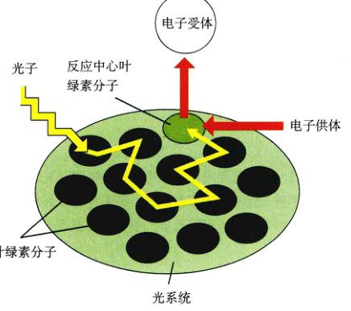
图 10.10 天线复合体如何运作 当适当波长的光照射到光系统中任何色素分子时，就会被色素分子吸收。激发能随后在色素分子丛中依次传递，直到到达反应中心的叶绿素 a 上。激发能到达反应中心叶绿素分子时，便开始了电子传递。
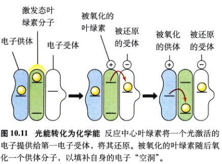
图 10.11 光能转化为化学能 反应中心叶绿素将一个光激活的电子提供给第一电子受体，将其还原。被氧化的叶绿素随后从一个供体分子，以填补自身的电子“空洞”。
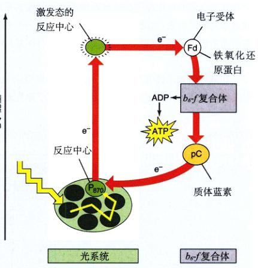
图 10.12 紫硫细菌中的电子传递途径 光系统反应中心 (P870) 发出的光激活电子经过一个循环，最终回到原来的光系统。
个电子后，其自身就少了一个电子，只有再补充一个电子，硫化细菌的光系统才能再起作用。这些细菌采用类似于第 9 章中所述及的电子传递系统，将电子传回色紊分子中，同时，电子的传递推动了质子泵的运作，以促进 ATP 的化学渗透合成。于是，化学家称这一引起 ATP 合成的电子传递过程为环式光合磷酸化 (cyclic photophosphorylation)。然而需要注意的是，离开 P870 反应中心的是吸收光子后激发的高能电子，返回光系统的电子，拥有的能量则与吸收光子前相同，电子的这一能量差被用于推动质子泵。
在超过 10 亿年的时间里，环式光合磷酸化是生物体采用的惟一光合作用光反应模式。然而，其主要限制在于，它只适用于产生能量，而不能进行生物合成。大部分光合生物将大气中的二氧化碳化合为糖类。相比于二氧化碳，糖类被还原得更彻底（有更多的氢原子）。因此，要合成糖类，必须找到还原力（也就是氢原子）的源泉。环式光合磷酸化无法做到这点。从 H₂S 中获取的氢原子，被用于还原 CO₂，而不能与碳结合。因此，只限于该过程的细菌只能从其他途径获取氢原子，自然必须多花不少力气。
2) 为何植物使用两个光系统
在硫化细菌出现以后，其他细菌中又进化出了能克服环式光合磷酸化限制的改进光系统模式。新模式采用的方法简单而有效：在原光系统上，结合了另一个更强大的光系统，该光系统的叶绿素 a 排列方式与原系统不同。
在被称为光系统Ⅱ的第二种光系统中，叶绿素 a 分子以一种不同的几何方式排列。因此，相比于原光系统——光系统 I，它能吸收的光子有更短的波长、更高的能量。与原光系统相同，能量在这些光系统天线复合体中的色素分子间传递，一直到达其反应中心——位于膜上一个强电子受体附近的某些特定色素分子。在光系统Ⅱ里，色素的吸收峰（即最强烈吸收光的波长）大约是 680 nm，因此，该反应中心色素被称为 P680。植物中光系统 I 色素的吸收峰为 700 nm，所以其反应中心色素称 P700。两个光系统共同运作，进行非环式电子传递。
Page 12 / 原始页码 186
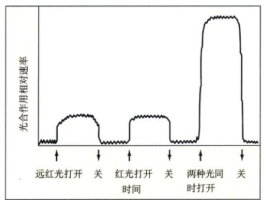
图 10.13 增效作用 红光和远红光同时照射时的光合作用速率，大于两种光单独照射之和。这一结果在 20 世纪 50 年代曾使研究人员困惑。而今，它为“光合作用由两个最适波长略有不同的光化学系统联合执行”提供了关键证据。
在用两种不同波长的光线（一种为红光，另一种为远红光）衡量光合效率时，测得的值大于两种光线单独作用值的总和（图 10.13）。这一称为增效作用 (enhancement effect) 的惊人结果，可用两个光系统连续运作（即一个在另一个之后）的机制来解释：这两个光系统，一个偏重于吸收红光，另一个偏重吸收远红外光。
两个光系统的运用，用简单而直接的方式解决了取得还原力的问题，同时时获取两个光系统的能量。图 10.14 中所示图形称为 Z 形图，表示的是两个电子获能的步骤。电子来自与电子紧密结合的水（其氧化还原电位为 + 820mV），最终传递给对电子束缚松弛得多的 NADPH（氧化还原电位为 - 320mV）。
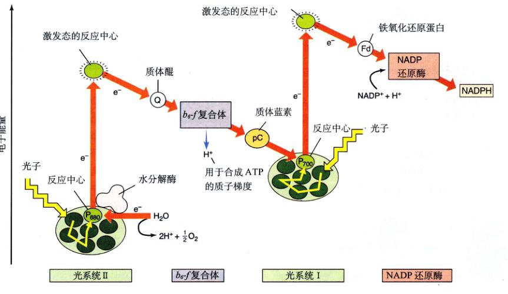
图 10.14 光系统Ⅰ和Ⅱ的 Z 形图 两个光系统顺序运作。首先，光子从光系统Ⅱ中激发出一个高能电子，该电子被推动跨膜的质子泵，以完成 ATP 分子的化学渗透合成。发出的电子通过一系列细胞色素来到光系统 I。光系统 I 吸收光子，再激发出一个高能电子，来推动 NADPH 的合成。
Page 13 / 原始页码 187
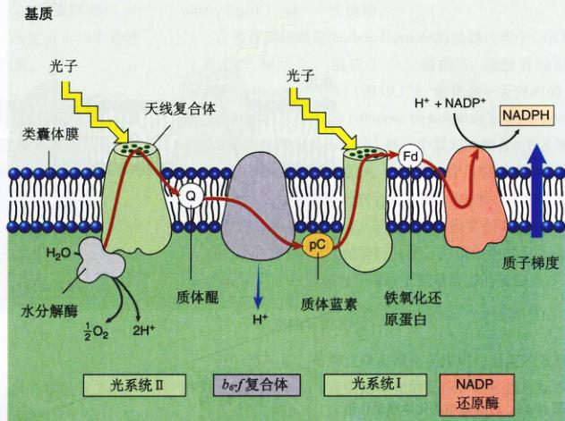
图 10.15 光合作用电子传递系统 光子到达光系统Ⅱ的色素分子时，能激发电子。该电子与在酶的催化下从水中分解出的一个质子结合对，再沿由一系列嵌于膜上的细胞色素电子载体组成的链传递（红箭头）。水分解时，氧气从细胞中释放出来，氢离子则留在类囊体腔中。在质子泵 (b₆-f 复合体) 处，光子提供的能量被用来将质子跨膜运输到类囊体腔中。于是类囊体内部的氢离子浓度进一步增加。光系统 I 吸收另一个光子后，其色素分子将第二个高能电子递到一个还原复合体中，产生 NADPH。
10.3.5 植物两个光系统如何共同工作
植物运用前面讨论过的两个光系统，来合成 ATP 和 NADPH，这两个步骤被称为非环式光合磷酸化 (noncyclic photophosphorylation)。因为电子所经的路径并不是一个闭合的环，光系统放出的电子并非返回其本身，而是到达 NADPH。光系统的电子缺失，由水分解出的电子补充。光系统Ⅱ首先工作，光系统 I 接收的电子，来自光反应中产生的质子梯度。电子到达该“泵”分子，诱导质子跨膜运输的发生，随后电子被传递到下一个接收分子中。
1) 光系统Ⅱ
光系统Ⅱ的反应中心，即 P680，与紫细菌的反应中心都很相似。它由十多个跨膜蛋白亚单位构成。用于捕获光能的天线复合体，由 250 个叶绿素 a 和辅助色素所组成，它们都结合在几条蛋白质链上。在光系统Ⅱ中，2 个水分子的氧原子与一串锰原子相结合，而后埋藏于酶中，并与反应中心相联系，此酶以一种不太为人们所知的方式分解水，每次移除 1 个电子，来填补反应中心因光激发电子离去而造成的空缺。从 2 分子水中除去 4 个电子后，即释放出 1 分子氧气。
2) 到达光系统 I 的途径
对于离开光系统Ⅱ的光激发电子而言，正如在前面所述的细菌光系统一样，第一个电子受体是醌分子，由此而得的还原醌——质体醌 (plastoquinone, 以 Q 表示)，是一个强电子供体。它将受激电子传递给一个埋于类囊体膜上的质子泵——b₆-f 复合体 (图 10.15)。b₆-f 复合体与第 9 章中讨论过的线粒体电子传递链中的 bc1 复合体很相似。高能电子的到达，导致 b₆-f 复合体将一个质子泵入类囊体膜内。随后，一个称为质体蓝素 (plastocyanin, 表示为 pC) 的含铜小蛋白，将电子送到光系统 I 中。
3) 制造 ATP：化学渗透作用
b₆-f 复合体将质子从基质泵到闭合的类囊体中。水...
Page 14 / 原始页码 188
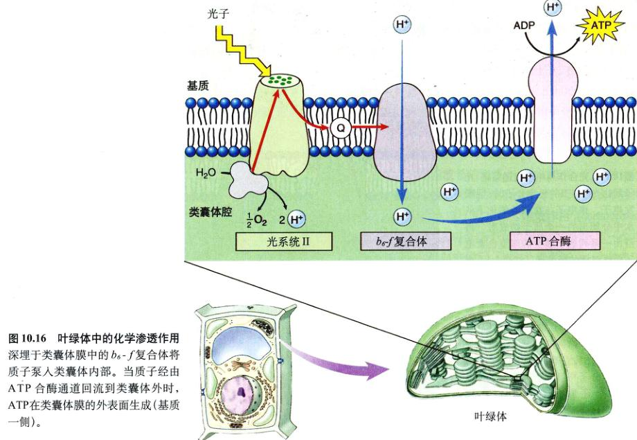
图 10.16 叶绿体中的化学渗透作用 深埋于类囊体膜中的 b₆-f 复合体将质子泵入类囊体内部。部分质子经由 ATP 合酶通道流回到类囊体外时，ATP 在类囊体膜的外表面生成 (基质一侧)。
的分解同样提供了质子，提高了膜内外的质子梯度。对质子而言，类囊体膜是不可渗透的，因此质子的回渗几乎完全是通过 ATP 合酶 (ATP synthase) 通道进行的。这些通道从类囊体膜的内表面突出来，就像门把手一样。随着质子通过 ATP 合酶通道流出类囊体，ADP 被磷酸化为 ATP，并释放到基质，即叶绿体内的液态内容物中（图 10.16）。基质含有催化碳固定反应的酶。
4) 光系统 I
光系统 I 的反应中心，即 P700，是一个含有至少 13 个蛋白亚单位的跨膜复合体，由含有 130 个叶绿素 a 和辅助色素分子的天线复合体为其供给能量。光系统 I 接收一个来自质体蓝素的电子，来填补由于光激发出的高能电子离去而产生的空缺。到达的电子并没有失去全部的光激 发能——事实上，几乎有一半被保留下来。因此，光系统 I 吸收一个光子的光能后，把即将离开反应中心的电子激发到一个很高的能级。光系统 I 并不像光系统Ⅱ和细菌光系统那样以苯醌为电子受体，而是将电子传递给一个称为铁氧化还原蛋白 (ferredoxin, Fd) 的铁硫蛋白。
5) 制造 NADPH
光系统 I 将电子传递到位子膜靠近基质一边（类囊体外）的铁氧化还原蛋白上，被还原的铁氧化还原蛋白携带着有很高电势的电子。来自 2 分子还原型铁氧化还原蛋白的 2 个电子，随后被加到 1 分子 NADP⁺ 上，形成 NADPH。催化这一反应的酶，是连在膜上的 NADP 还原酶。因为这一反应发生在膜靠基质的一边，又在形成 NADPH 时获得了质子，所以它进一步提高了由光合电 子传递而形成的膜内外质子梯度。
6) 制造更多的 ATP
光合电子传递过程中，水分子将 1 个电子传递给 NADPH，生成 1 分子 NADPH 和稍多于 1 分子的 ATP。然而，正如你将在本章后绪部分学到的那样，构建有机分子需要比这更多的能量——对于每个 NADPH 分子而言，需要 1.5 个 ATP 分子来固定碳。为了制造额外的 ATP，很多植物都有光系统 I 的短回路，可将光合作用转为环式光合磷酸化的模式，使离开光系统 I 的光激发电子用于制造 ATP，而不是 NADPH。高能电子直接传回 b₆-f 复合物...
Page 15 / 原始页码 189
上，而不传给 NADP⁺。b₆-f 复合体泵出出一个质子，提高推动 ATP 化学渗透合成的质子梯度。在这些植物中，环式与非环式光合磷酸化的相对比例，决定了可用于构建有机分子的 ATP 和 NADPH 的相对数量。
10.4 细胞利用光反应捕获的能量和还原力来制造有机分子
10.4.1 卡尔文循环
光合作用是利用二氧化碳 (CO₂) 制造有机分子的一种途径。这些有机分子含有许多 C-H 键，相比于 CO₂，它们是高度还原的。细胞运用光反应提供的以下原料来制造有机分子：
(1) 能量：ATP (由环式与非环式光合磷酸化作用提供) 推动了这一吸 (耗) 能反应。
(2) 还原力：NADPH (由光系统 I 提供) 供给的是氢原子以及把氢原子加在碳原子上所需要的高能电子。
光合作用捕获的许多光能，最后都储存在糖类富含能量的 C-H 键中。
1) 碳的固定
卡尔文循环使 CO₂ 的还原成为可能，循环的关键步骤是 CO₂ 与一个很特殊的有机分子联结。细胞制造这一分子的方法，是重新组合糖酵解的两个中间产物，即果糖-6-磷酸和甘油醛-3-磷酸的化学键，组成富含能量的五碳糖——1,5-二磷酸核酮糖 (ribulose 1,5-biphosphate, RuBP) 和一个四碳糖。
在称为碳固定 (carbon fixation) 的关键过程中，CO₂ 与 RuBP 相结合，组成 2 个三碳的 3-磷酸甘油酸 (phosphoglycerate, PGA) (图 10.17)。催化这一反应的酶，称为 RuBP 羧化/加氧酶 (ribulose biphosphate carboxylase/oxygenase, 常简写为 rubisco)，是一个很大的拥有 4 个亚基的酶，存在于叶绿体基质中。这种酶的作用较缓慢，每秒钟只能催化 3 分子 RuBP 进行反应（典型的酶，每秒钟能催化约 1000 个底物分子）。正因如此，需要很多的 RuBP 羧化酶分子。在典型的植物叶片中，总蛋白的 50% 是 RuBP 羧化酶，它被认为是地球上数量最多的蛋白质。
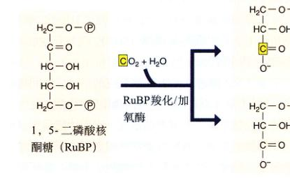
图 10.17 卡尔文循环中的关键步骤 Melvin Calvin 和他在加利福尼亚大学的同事发现了卡尔文循环的第一步。他们将进行光合作用的藻类暴露在具放射性的 CO₂ (¹⁴CO₂) 下。追踪放射性碳原子的痕迹，他们发现，它首先与 1 分子 1,5-二磷酸核酮糖 (RuBP) 结合，随后立即分解为 2 分子磷酸甘油酸 (PGA)。其中 1 分子 PGA 含有放射性碳原子。1948 年，人们分离出了催化这一重要反应的酶——RuBP 羧化酶。
2) 卡尔文循环的发现
近一百年前，布莱克曼根据光合作用对溫度的依赖性，推断其过程中含有由酶催化的反应，这些反应组成了一个类似于 Krebs 循环的酶促反应循环结构，这些反应构成的循环，以其发现者——加利福尼亚大学柏克莱分校的 Melvin Calvin 命名，称为卡尔文循环 (Calvin cycle)。因为这一循环以 CO₂ 与 RuBP 结合形成 PGA 为起始，而 PGA 含 3 个碳原子，所以这一过程又叫做 C₃ 光合作用 (C₃ photosynthesis)。
3) 能量循环
本章所研究的捕获能量的叶绿体能量代谢，与上一章中的线粒体能量代谢密切相关。光合作用以呼吸作用的产物为初始底物，而呼吸作用又以光合作用的产物为初始底物 (图 10.18)。卡尔文循环甚至反向运用了古老的糖酵解途径的一部分，来制造葡萄糖。植物中电子运输所用的主要蛋白质，也与线粒体中的蛋白质很相关，在很多情况下，它们其实是相同的。
Page 16 / 原始页码 190
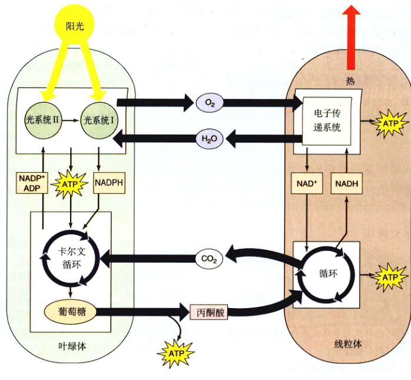
图 10.18 叶绿体和线粒体：完成一个能量循环 水和氧气与葡萄糖和 CO₂ 一样，在同一植物细胞的外绿体和线粒体间循环。有叶绿体的细胞需要外部提供的 CO₂ 和水来产生葡萄糖和氧气。没有叶绿体的细胞，如动物细胞，需要外部提供的葡萄糖和氧气来产生 CO₂ 和水。
虽然光合作用很重要，它仍只是植物生理的一个方面。从第 37 到 43 章，我们会更详细地介绍植物。在这里，我们将光合作用作为细胞生理的一部分来讲授，因为光合作用早在植物出现前就已经存在，并且所有生物体都直接或间接地依靠光合作用来提供维持它们生命的能量。
10.4.2 卡尔文循环中的反应
在一系列反应 (图 10.19) 中，RuBP 羧化酶固定了 3 分子 CO₂，制造出 6 分子 PGA (共有 6 × 3 = 18 个碳原子，3 个来自 CO₂，15 个来自 RuBP)。这 18 个碳原子经历了一个循环的反应，重新产生用了在第一步的 3 分子 RuBP (含有 3 × 5 = 15 个碳原子)。循环的净收入是 1 分子甘油醛-3-磷酸 (含 3 个碳原子)。
卡尔文循环的净反应式为：
3CO₂ + 9ATP + 6NADPH + 水 → 甘油醛-3-磷酸 + 8Pi + 9ADP + 6NADP⁺
循环完整地进行 3 次，则消耗了 3 分子二氧化碳，制造出 1 分子甘油醛-3-磷酸 (G3P)，又重新生成 3 分子 RuBP (图 10.20)。
现在我们知道，CO₂ 还原反应的不同部分间接需要光。5 种卡尔文循环的酶，包括 RuBP 羧化酶，是由光激活的，也就是说，在有光的情况下它们才能运作，或者运作得更有效率。光可以促进三碳中间物跨越叶绿体膜的运输，这是卡尔文循环所需要的。最后，光还能促进 Mg²⁺ 进入叶绿体基质，以进一步活化 RuBP 羧化酶。
Page 17 / 原始页码 191
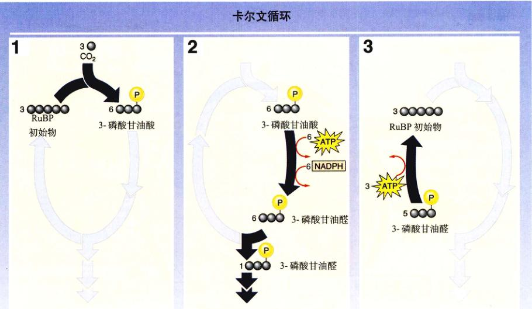
图 10.19 卡尔文循环如何进行 1. 卡尔文循环开始于来自 CO₂ 中的 1 个碳原子与 1 个五碳分子 (初始物) 的结合。所得的六碳分子不稳定，立即分解为两个三碳分子。 2. 随后，经过一系列反应，ATP 的能量和 NADPH 的氢原子 (光反应产物) 被加到三碳分子上。被还原的分子或被用于合成葡萄糖，或被用于合成其他分子。 3. 大部分被还原的三碳分子被用于重新生成五碳初始物，从而完成整个循环。
卡尔文循环的产量
卡尔文循环的产物——三碳糖甘油醛-3-磷酸 (G3P)，是糖酵解中的关键中间产物。它们中的大部分从叶绿体被运输至细胞质中，利用糖酵解中几个反应的逆过程，使其转化为果糖-6-磷酸和葡萄糖-1-磷酸，再将它们组合为蔗糖——植物中一种主要的运输用糖 (蔗糖，即普通的食糖，是由果糖和葡萄糖组成的一种二糖)。
在强光作用下，叶绿体基质中的甘油醛-3-磷酸增多，致使叶绿体中的一些甘油醛-3-磷酸被转化为葡萄糖-1-磷酸。与细胞质中所涉及的反应相似，这种转化也是进行了几个类似糖酵解反应的逆过程。产生的葡萄糖-1-磷酸组合为一个个不可溶的聚合物，形成以大颗粒形式储存于叶绿体中的淀粉长链。
10.4.3 光呼吸
进化过程不一定导致最佳方式，它更青睐于从已存在方法中得到可行的方案，光合作用也不例外。RuBP 羧化酶，即催化光合作用中关键的碳固定反应的酶，并不一定是最佳的选择。这种酶还有另一种活性，会干扰卡尔文循环，它可以氧化核酮糖-1, 5-二磷酸。在这个称为光呼吸 (photorespiration) 的过程里，O₂ 与核酮糖-1, 5-二磷酸相结合，再经历一些其他反应，释放出 CO₂。因而，光呼吸放出 CO₂，实际上是在抵消还原 CO₂ 为糖类的卡尔文循环的效应。
核酮糖-1, 5-二磷酸的羧化和氧化作用，是在 RuBP 羧化酶的同一活性位点被催化的，二者相互竞争。在 25°C 正常状况下，羧化反应的速率是氧化反应速率的 4 倍，也就是说，光合固定碳的 20% 损失在光呼吸中。这一损失随着温度升高而显著上升，这是因为，氧化反应比羧化反应的速率随温度上升升高得更快。
只使用 C₃ 光合作用固定碳 (卡尔文循环) 的称为 C₃ 植物。在 C₃ 光合作用中，核酮糖-1, 5-二磷酸在 RuBP 羧化酶的作用下，经羧化后形成一种三碳化合物。其他植物运用的则是 C₄ 光合作用。在此过程中，磷酸烯醇式丙酮酸 (PEP) 在 PEP 羧化酶的作用下，经羧化后形成一种四碳化合物。这种酶没有氧化活性，所以并不进行光呼吸，而且 PEP 羧化酶与 CO₂ 的亲和力比 RuBP 羧化酶高得多。在 C₄ 途径中，四碳化合物经过一步修饰后，羧基被脱去，释放的 CO₂ 被 RuBP 羧化酶捕获，进入卡尔文循环。有了提供 CO₂ 的有机化合物，CO₂ 的有效浓度相对对于 O₂ 而增加，光呼吸作用被压到最低限度。
Page 18 / 原始页码 192
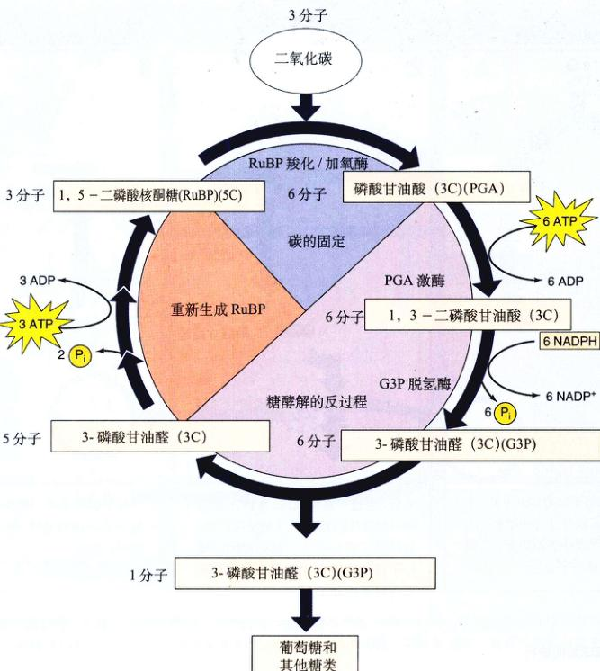
图 10.20 卡尔文循环 每 3 个 CO₂ 分子进入循环，会产生 1 分子三碳化合物，即 3-磷酸甘油醛 (G3P)。需注意此过程需要光反应中产生的储存在 ATP 和 NADPH 中的能量。这一过程发生在叶绿体的基质中。
光呼吸带来的固定碳的损失并非无足轻重。在 C₃ 植物光合作用固定的碳中，有 25%~50% 因此而损失掉，损失率很大程度上取决于温度。在热带气候下，尤其是气温常年高于 28°C 时，问题将很严重，并对热带农业产生重要影响。
1) C₄ 途径
适于生存在温暖环境的植物，发展出运用 C₄ 途径的两种方式来解决这一问题。其中一种方式，由植物在叶肉细胞中进行 C₄ 光合作用，而在维管束鞘细胞中进行卡尔文循环，这样可以使 CO₂ 的局部浓度提高，有利于 RuBP 羧化酶的羧化反应。这些植物称为 C₄ 植物，包括玉米、甘蔗、高粱和其他一些其他的草本植物。在 C₄ 途径里，三碳代谢物 PEP 经羧化后，形成四碳分子草酰乙酸，它是 CO₂ 固定的第一产物 (图 10.21)。在 C₄ 植物中，草酰乙酸随后被转化为中间产物苹果酸，苹果酸再被运输至邻近的维管束鞘细胞。在维管束鞘细胞里，苹果酸脱去羧基，产生丙酮酸，并释放 CO₂。因为维管束鞘细胞对 CO₂ 而言是不可渗透的，所以 CO₂ 被留在细胞内，积累到高浓度。丙酮酸返回叶肉细胞后，该处一个 ATP 分子的两个高能键断裂，将丙酮酸重新转化为 PEP，从而完成整个循环。
C₄ 植物进行卡尔文循环的酶位于维管束鞘细胞中，细胞中高浓度的 CO₂ 减少了光呼吸。由于运输一个 CO₂ 分子到维管束鞘细胞，需要消耗两个高能 ATP 键，同时形成一分子葡萄糖又需要固定 6 个碳原子，因此形成一分子葡萄糖还需要额外 12 分子的 ATP。在 C₃ 光合作用中，形成葡萄糖的能量消耗几乎是 C₃ 光合作用的两倍 (ATP 分子数的比为 30:18)。不过，C₄ 光合作用在炎热气候下占有优势，否则光呼吸会消耗超过一半的已固定碳。
Page 19 / 原始页码 193
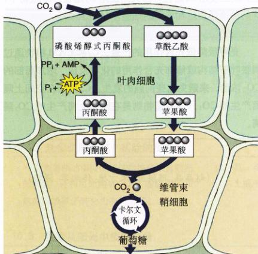
图 10.21 C₄ 植物中的碳固定 这一过程称为 C₄ 途径，因为生成的第一个分子——草酰乙酸，是一个含有 4 个碳原子的分子。
2) 景天酸途径
在炎热地区，采用第二种策略来降低光呼吸作用的是许多肉质植物，如仙人掌、菠萝，以及约 20 多种其他植物类群中的一些成员。人们首先在景天科植物 (景天) 中，发现这种初始碳固定方式，因而将其命名为景天酸代谢 (crassulacean acid metabolism, CAM)。在这些植物的叶片上，有方便二氧化碳进入和水分蒸发的特别开口——气孔。气孔白天关闭，而晚上张开。这种气孔开合方式，与大部分植物相反。CAM 植物在晚上打开气孔，通过 C₄ 途径将 CO₂ 初始固定在有机化合物中。这些有机化合物在整个晚上不断积累，随后，它们在白天脱去羧基，得到高浓度的 CO₂，高浓度的 CO₂ 推动卡尔文循环，并将光呼吸降至最低。像 C₄ 植物那样，CAM 植物同时运用 C₄ 和 C₃ 途径。不同于 C₄ 植物的是，它们在同一细胞里，晚上使用 C₄ 途径，白天则使用 C₃ 途径。C₄ 植物中，这两种途径发生在不同的细胞里 (图 10.22)。
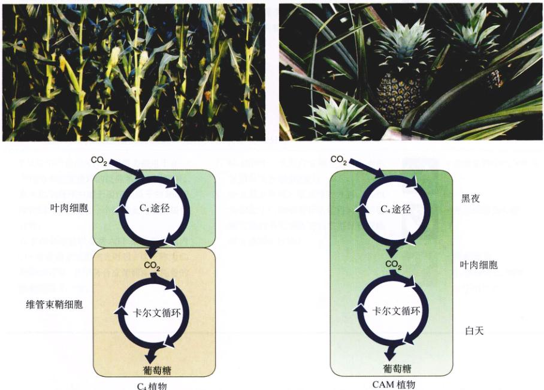
图 10.22 C₄ 植物与 CAM 植物的比较 两种植物都利用 C₄ 和 C₃ 两种途径。C₄ 植物中，两种途径在空间上分隔开：C₄ 途径在叶肉细胞中发生，而 C₃ 途径发生在维管束鞘细胞里。CAM 植物中，两种途径在时间上分隔开：晚上用 C₄ 途径，白天用 C₃ 途径。
Page 20 / 原始页码 195
小 结
10.1 什么是光合作用
- 植物、藻类和一些细菌在一个称为光合作用的过程中，用光将空气中的 CO₂ 转化为糖类。
- 光合作用中产生的氧气里的氧原子是从哪里来的？
10.2 光合作用研究：实验的历程
- 一系列简单的实验说明植物捕获来自阳光的能量，并利用光能将 CO₂ 中的碳原子和水中的氢原子转化为有机分子。
- 范·荷蒙特是如何判断出植物不是从土壤中得到食物的？
10.3 色素从阳光中捕获能量
- 光由光子组成，光的波长越短，其能量越高。当色素吸收光子后，色素分子中的电子被激发到更高的能级上。
- 光合作用将光子激活能运送到同一个色素分子上。细菌里，该分子随后将电子提供给一个电子运输链，运输链推动质子泵并最终将电子归还给色素。
- 植物采用两个光系统。光能先由光系统Ⅱ吸收，再传到光系统 I，从而推动质子泵并开始了 ATP 的化学渗透合成。
- 电子到达光系统 I 后，另一个光子被吸收，被激活的电子被运输到能将 NADP⁺ 还原为 NADPH 的第一电子受体上。
10.4 细胞利用光反应捕获的能量和还原力来制造有机分子
- 光反应中产生的 ATP 和还原力被用于在一个称为卡尔文循环的反应系列中固定碳。
- 在卡尔文循环中用于固定碳原子的 RuBP 羧化酶，同时催化一个称为光呼吸的氧化过程。
- 许多热带植物以花费 ATP 来提高细胞内 CO₂ 浓度的方式抑制光呼吸。这一称为 C₄ 途径的过程，几乎将合成葡萄糖要耗费的能量提高了一倍。
问 题
- 光合作用中产生的氧气里的氧原子是从哪里来的？
- 范·荷蒙特是如何判断出植物不是从土壤中得到食物的？
- 色素分子是如何捕获光能的？为什么叶绿素反射的光是绿色的？
- 反应中心叶绿素分子的功能是什么？第一电子受体的作用又是什么？
- 解释硫化细菌中的光合作用是如何完成一个循环的。一个电子能产生多少能量（以 ATP 分子数计算）？
- 植物和藻类中的两个光系统如何运作？分别在哪个阶段产生 ATP 和 NADPH？
- C₃ 植物中，光反应在哪里进行？卡尔文循环又在哪里进行？
- 什么是光呼吸？在光呼吸方面，C₄ 植物相比于 C₃ 植物有什么优势？C₄ 植物哪方面的不足导致它们主要分布在地球上温暖的区域？
媒体资源
- 实践活动：叶绿体的结构
- 技能测验：光和光合作用
- 实践活动：电磁波谱
- 探索：光合作用
- 光依赖型光合作用
- 光和色素
- 光依赖型反应
- 技能测验：光系统天线复合体
- 叶绿体中的化学渗透
- 光非依赖型光合作用
- 光非依赖型反应
- 技能测验：C₃ 植物和 C₄ 植物叶子的比较